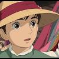
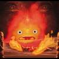
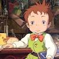

개봉일: 2004년 12월 24일 (대한민국)
| night |
감독: 미야자키 하야오
출연진: 크리스찬 베일, 에밀리 모티머, 진 시몬스, 로런 버콜
| 소녀가 마법에 걸린 순간, 꽃미남 마법사의 성문이 열렸다! 어느 날, 영문도 모른 채 마녀의 저주로 인해 할머니가 된 소녀'소피', 절망 속에서 길을 걷다 가 거대한 마법의 성에 들어가게 된다. 그곳에서 자신과 마법사 하울의 계약 을 깨주면 저주를 풀어주겠다는 불꽃악마 캘시퍼의 제안을 받고 청소부가 되어 '움직이는 성'에 머물게 되는데... |
|  |  |  | |